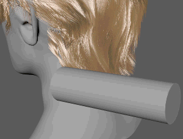
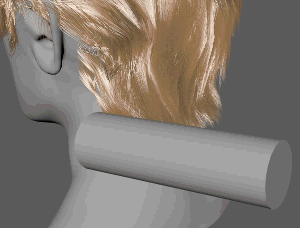

使用碰撞修改器可在单根头发与多边形网格之间全局创建碰撞。
碰撞修改器(Collision Modifier)
- 碰撞距离(Collision Distance)
- 设置碰撞对象网格曲面与任意头发 CV 之间的最小距离。头发将在面法线的方向上向外推，以确保此最小距离保持不变。增大该值将增加碰撞对象网格曲面之间的距离，而减小该值会缩短距离。
- 网格采样(Mesh Sampling)
- 确定头发与网格对象之间的碰撞检测精度。增加该值可获得更精确的碰撞。默认值 5 适用于大多数情况，但您可以调整介于 3 和 20 之间的值。
- 平滑因子(Smooth Factor)
- 允许应用平滑以移除因碰撞而纽结或呈锯齿状的头发。
仅当“解决类型”(Resolve Type)设置为“伸缩”(Flexible)时，此设置才可用。
- 保留变形(Preserve Deformation)
- 启用时，头发会保持其形状和通过与碰撞对象发生碰撞而产生的变形，这会累积多次碰撞。禁用时，头发与碰撞对象相交时会发生变形，并且发生碰撞之后，头发回到其原始形状。默认情况下，“保留变形”(Preserve Deformation)处于禁用状态。

保留变形(Preserve Deformation)：启用

保留变形(Preserve Deformation)：禁用
碰撞对象(Collision Objects)
- 添加碰撞对象(Add Colliders)
- 选择一个或多个多边形网格、组或集作为碰撞对象，然后按住 Ctrl 键并在“交互式修饰编辑器”(Interactive Groom Editor)中单击“碰撞”(Collide)修改器。
碰撞对象会在“对象名称”(Object Name)下列出。
- 启用(Enable)
- 使碰撞的对象用作碰撞对象。可以通过关闭此选项暂时禁用碰撞对象。
- 翻转法线(Flip Normal)
- 启用时，头发将在与面法线相反的方向上向外推。默认情况下，头发从面法线的方向开始向外推。
- 移除碰撞对象(Remove Colliders)
- 从“对象名称”(Object Name)列表中选择碰撞对象，然后单击“移除碰撞对象”(Remove Colliders)将其永久移除。